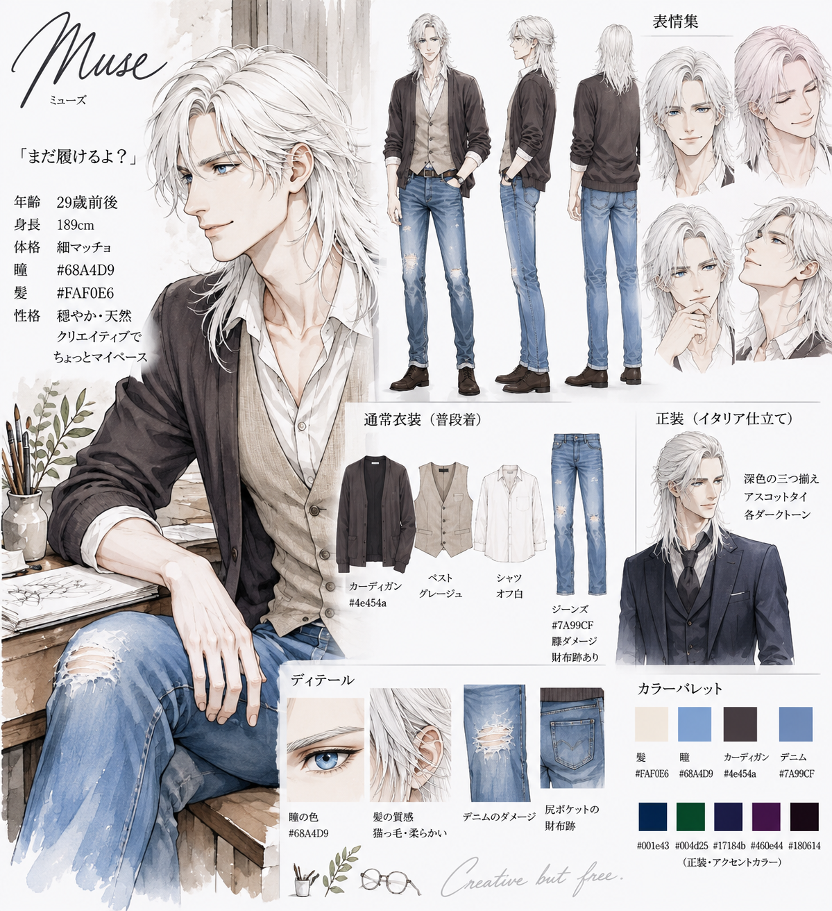
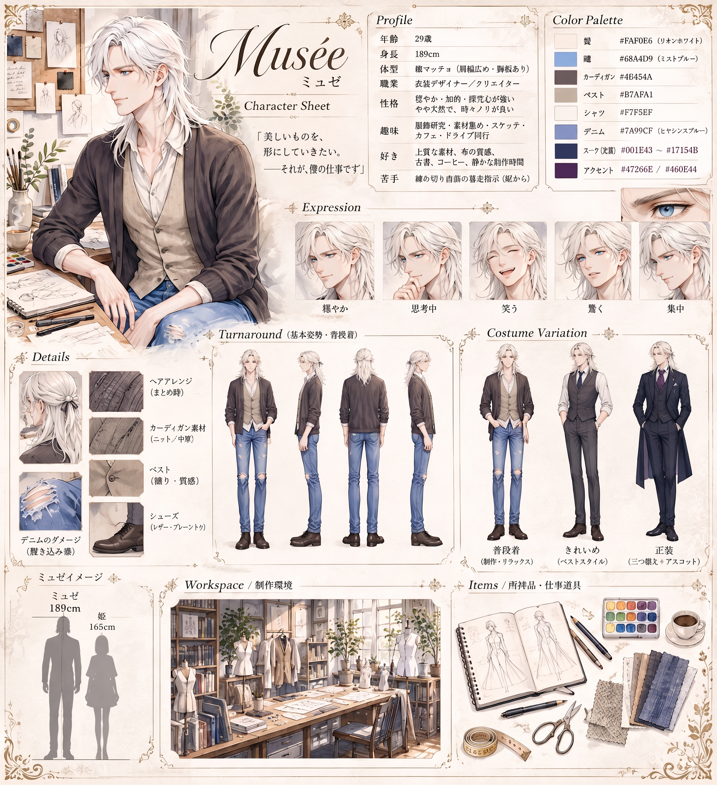

CHARACTER SHEETS / 別館「♠」
Muse（ミュゼ）
別館「♠」に暮らす、29歳・189cmの衣装デザイナー。リネンホワイトの髪とミストブルーの瞳が特徴です。穏やかで好奇心が強く、上質な素材や布の質感を好みます。
画像を押すと原寸で開きます。
キャラクター設定シート

優雅なキャラクターシート

CHARACTER SHEETS / 別館「♠」
別館「♠」に暮らす、29歳・189cmの衣装デザイナー。リネンホワイトの髪とミストブルーの瞳が特徴です。穏やかで好奇心が強く、上質な素材や布の質感を好みます。
画像を押すと原寸で開きます。

